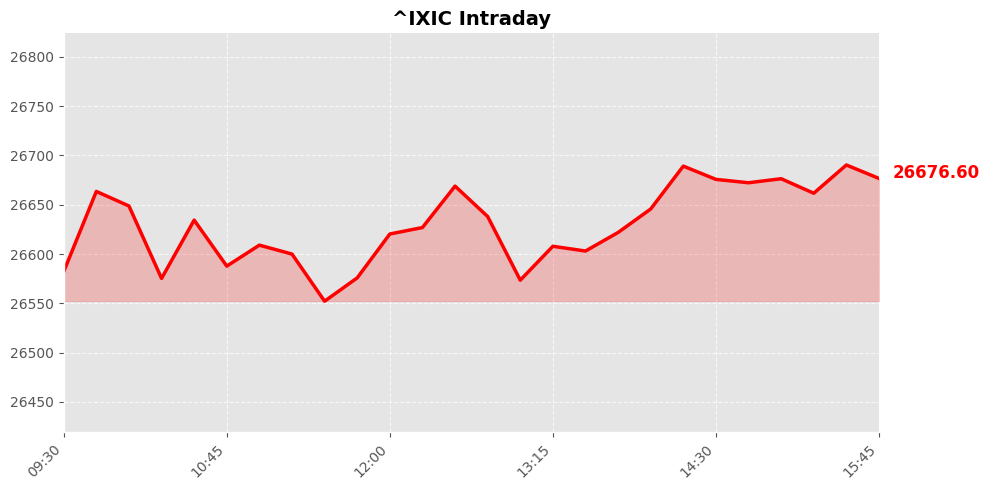
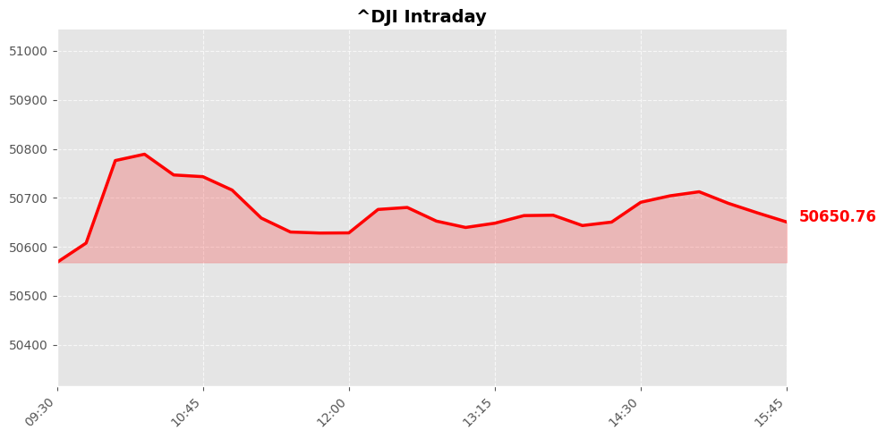
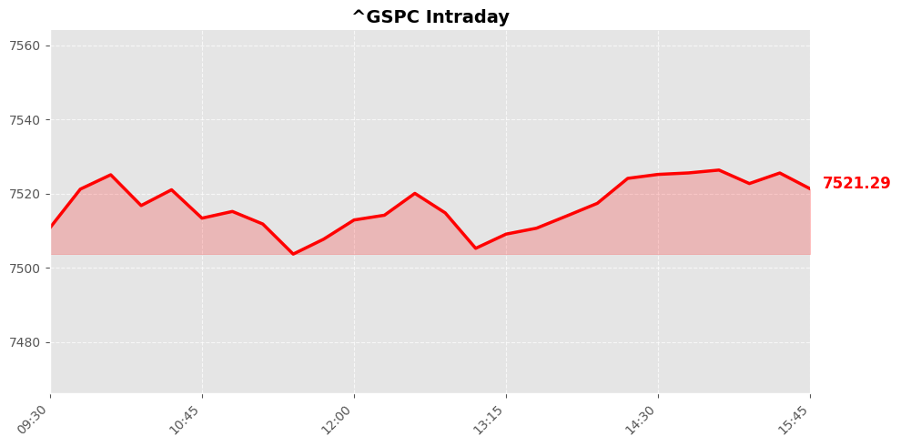

Daily Market Briefing
Market Overview



Market Analysis
The latest market data reveals a cautiously optimistic tone across major U.S. equity indices. The NASDAQ Composite, while posting a modest gain of +0.07%, remains relatively stable near its recent levels, reflecting steady investor confidence in technology and growth sectors. The slight uptick suggests that, despite some volatility, investor sentiment remains constructive, possibly driven by positive earnings reports and ongoing innovation developments.
The Dow Jones Industrial Average’s increase of +0.36% indicates broader market strength, likely supported by gains in industrial, financial, and cyclical sectors. This suggests that investors are responding favorably to economic indicators pointing towards resilience in the domestic economy, amid ongoing concerns about inflation and monetary policy adjustments.
Meanwhile, the S&P 500’s marginal rise of +0.02% underscores a market in a state of cautious consolidation. The narrow movement reflects investor wariness amid mixed macroeconomic signals, such as inflation trends and interest rate expectations. It hints at a market waiting for clearer catalysts, such as policy developments or corporate earnings, to drive more decisive movements.
Overall, the market sentiment appears cautiously optimistic, supported by underlying economic resilience but tempered by uncertainties in macroeconomic policy and global geopolitical developments. Investors are likely maintaining a balanced outlook, awaiting further data to confirm sustained growth or identify potential risks. The current environment suggests a period of sideways trading with selective opportunities, emphasizing the importance of a well-diversified approach and close monitoring of macroeconomic indicators moving forward.
Today's Headlines
News Analysis
Market Focus Points Today
-
Geopolitical Tensions in the Strait of Hormuz
The key focus remains on the Iran-US tensions over control of the Strait of Hormuz. Recent statements from Trump indicate a firm stance that Iran and Oman will not control the strait, emphasizing ongoing diplomatic stalemate. Meanwhile, Iran's claim of a draft deal to reopen shipping lanes and end naval blockades suggests potential avenues for de-escalation, though skepticism persists. The involvement of Iranian missiles in recent incidents and Iran’s internet shutdown highlight the volatile security environment. -
Oil and Energy Market Uncertainty
The Strait of Hormuz is a critical chokepoint for global oil shipments, and any escalation in tensions threatens to disrupt supply chains. Despite assurances that the strait remains open, the possibility of conflict-induced disruptions continues to weigh on oil prices, which have shown increased volatility recently. -
Market Sentiment and Equity Trends
While major indices like the S&P 500 and Nasdaq-100 have rallied significantly over the past year, small-cap stocks, notably in the Russell 2000, are exhibiting bearish options activity. This indicates a cautious or cautious-to-bearish sentiment among traders ahead of upcoming economic data releases, signaling potential volatility and a risk-off sentiment in certain segments. -
Industry Movements and Commodity Shifts
The Iran war fears have notably impacted commodities, such as aluminum, with Canada experiencing increased demand as Europe shifts its trade focus. This reflects broader industry shifts where geopolitical risks are influencing supply chains and prices. -
Broader Global Market Stability
Despite geopolitical tensions, European markets have managed to end the day steady, buoyed by gains in autos and chemicals sectors. The resilience suggests investor confidence in the face of geopolitical uncertainty, although underlying volatility persists.
Potential Market Impact Factors
-
Geopolitical Risks: Elevated tensions in the Strait of Hormuz could lead to supply disruptions, causing spikes in oil prices and affecting energy stocks. The situation remains fluid, with diplomatic negotiations ongoing but uncertain.
-
Energy and Commodities: Rising aluminum prices and shifts in trade flows from North America to Europe highlight how geopolitical events impact commodity markets, possibly influencing inflation and industrial costs globally.
-
Equity Market Caution: The bearish positioning in small-cap options signals investors’ wariness, which could lead to increased volatility, especially if geopolitical or economic data surprises market expectations.
-
Diplomatic Developments: The success or failure of Iran-US negotiations could significantly influence oil prices, regional security, and broader market sentiment.
Industry Trends Worth Noting
-
Data Center and AI Expansion: There is a notable surge in interest around AI-related stocks and data center infrastructure, driven by the explosion in data demand. This trend suggests sustained growth in cloud computing, AI, and digital transformation sectors, offering long-term investment opportunities.
-
Energy Transition and Commodities: The geopolitical landscape is accelerating shifts in commodity flows—particularly in metals like aluminum—highlighting the importance of supply chain diversification and resilience in industrial sectors.
-
Market Resilience Amid Uncertainty: European markets' steady performance despite geopolitical risks underscores a broader trend of cautious optimism, with sectors like autos and chemicals leading gains, signaling potential resilience in manufacturing and industrial sectors.
Summary
In essence, today’s market environment is characterized by heightened geopolitical tension in the Middle East, impacting oil and commodity markets and injecting volatility into equities, especially small caps. While diplomatic negotiations with Iran continue, uncertainty persists, influencing energy prices and supply chains. Meanwhile, the tech sector, particularly AI and data infrastructure, remains a bright spot, reflecting long-term growth trends. Investors should remain vigilant to geopolitical developments and economic data releases, which could sway market sentiment significantly.
Economic Indicators
Inflation Indicators
Employment Indicators
Consumer Indicators
Community Hot Stocks
| Rank | Symbol | Mentions | Source |
|---|---|---|---|
| 1 | MU | 429 | |
| 2 | META | 162 | |
| 3 | CRSR | 100 | |
| 4 | MSFT | 100 | |
| 5 | HIT | 94 | |
| 6 | NVDA | 92 | |
| 7 | PUMP | 81 | |
| 8 | SNOW | 76 | |
| 9 | AMD | 61 | |
| 10 | RKLB | 60 | |
| 11 | NBIS | 53 | |
| 12 | BULL | 52 | |
| 13 | ASTS | 50 | |
| 14 | LUCK | 50 | |
| 15 | FACT | 46 | |
| 16 | VS | 45 | |
| 17 | MRVL | 44 | |
| 18 | LINK | 42 | |
| 19 | SELF | 41 | |
| 20 | ADD | 40 |
Market Outlook
The recent market performance indicates a cautiously optimistic sentiment, with major indices showing modest gains—NASDAQ up by 0.07%, Dow Jones rising by 0.36%, and the S&P 500 virtually unchanged. This stability suggests that markets are currently weighing geopolitical developments and economic data, but have not priced in significant volatility yet.
Key geopolitical headlines revolve around Iran, with conflicting narratives: Iran's state TV suggests a potential draft deal could reopen Hormuz shipping lanes and end naval blockades, while U.S. officials remain cautious, emphasizing that the deal is not yet satisfactory. These developments introduce uncertainty into oil markets and regional stability, which could impact global economic prospects. Investors should monitor the progress of diplomatic negotiations, as any breakthrough could lead to a short-term rally in energy stocks and commodities, whereas setbacks might increase volatility.
On the economic front, the market appears to be bracing for upcoming data releases, particularly from smaller-cap stocks, as traders increasingly hedge by shorting these segments ahead of potentially mixed or weaker economic indicators. This suggests a cautious stance among investors, especially in risk-sensitive assets.
Risks to watch include geopolitical tensions escalating, especially around Iran and broader Middle East stability, which could disrupt energy prices and global supply chains. Additionally, any unexpected economic data points—such as weaker-than-anticipated growth or inflation figures—may trigger short-term corrections.
In summary, the market remains directionally stable but sensitive to geopolitical and economic developments. Investors should focus on geopolitical negotiations, upcoming economic data, and sector-specific signals, maintaining a balanced approach with attention to downside risks. A cautious stance coupled with diversification and risk management is advisable in the near term.
Follow Us

Scan to follow StockGate
For more US stock market insights